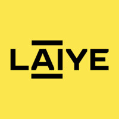
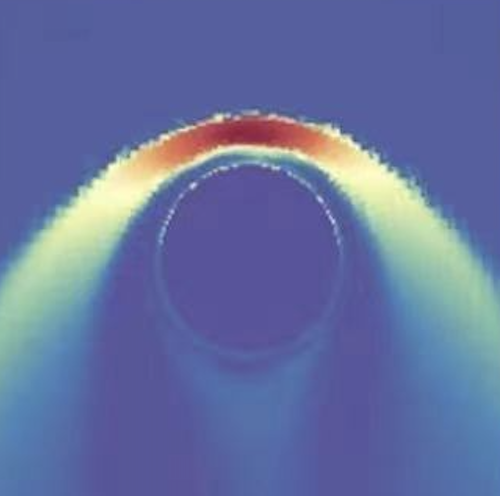

|
I am a senior student at Middlebury College, where I study computer science and mathematics. I also work at Yakera as a Full-Stack Engineer. At Middlebury I've participated in bioinformatics research, advised by Micheal Linderman. I am honored to be selected as a Middlebury Social Entrepreneurship Fellow for my project in promoting rural education in China. Outside of school, I am a certified snowboard instructor and enjoy basketball, hiking, and playing the guitar. I am passionate about solving challenges in artificial intelligence, specifically computer vision. The fact that human vision system can seeminglessly accomplish perception, inference, and generalization amazes me! |

|
|
I am looking for SWE internships for Summer 2023! |
|  |
I worked as a Software Engineering Intern at Laiye AI, a leading AI start-up based in Beijing. During my time as an intern, I focused on creating process automation tools and softwares that make tedious formalities like tax reporting, new hire on-boarding more efficient. |
|
OVR Technology is an Olfactory Virtual Reality start-up based in Burlington, VT. As part of the data science team, I applied state-of-the-art computer vision models to classify multiple types of hardware malfunctions. Our work contributed to the manufacturing process of a compact actuator device that produces scents that correspond to the virtual object! |
|
I'm interested in computer vision, machine learning, and computer graphics. My previous experiences includes projects on simulating the physical world and applying machine learning techniques in bioinformatics research and production image classification. |
|  |
I worked as a Research Assistant to Dr. Yiteng Zhang in the Space Science Division of the Chinese Academy of Science. The data visualization project involves converting physical data defined by a huge (7 million) set of polygon meshes to 2D heat maps efficiently. Using the graphical interface my teammates and I have constructed, researchers can test their hypothesis on the large data set with precision and speed. |
|
Website code based on Jon Barron |